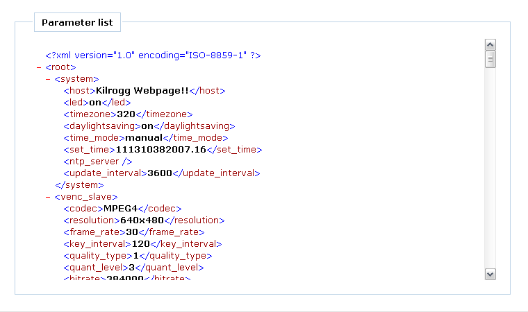
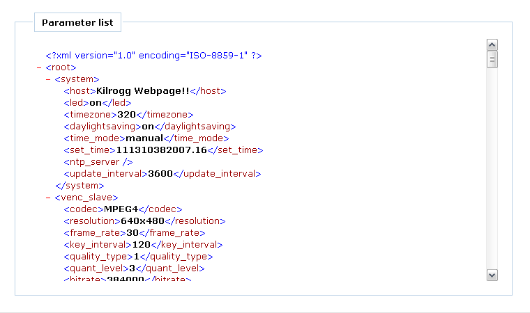

This page only includes a inside frame to display system parameters.
Sample view

View Parameters
This page only includes a inside frame to display system parameters.

This page shows system configurations and all application configurations in XML formate. The configurations are for system setting, video encoder stream 1, video encoder stream 2, audio encoder, RTSP Server, HTTP push server and motion detection.